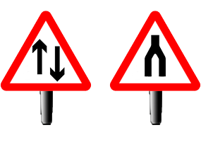

Pass Plus
Dual Carriageway
Dual Carriageway Ends
-Look out for signs warning of the end of the dual carriageway and where two way traffic applies.

-Be prepared for new road layouts and speed limits.